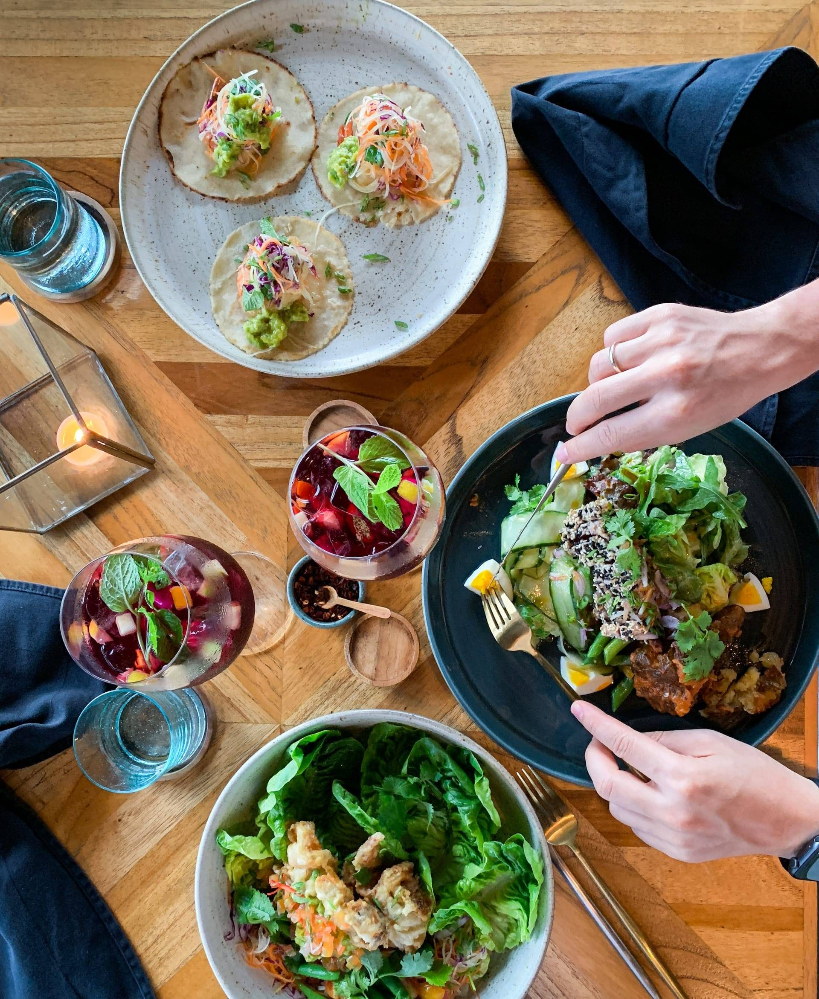
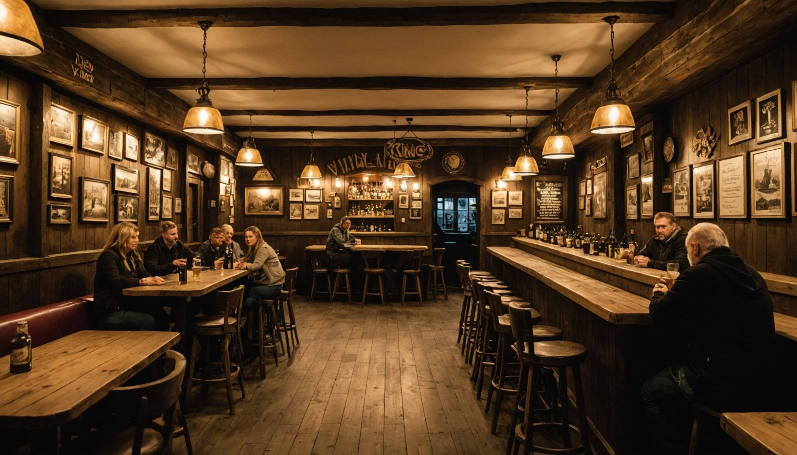
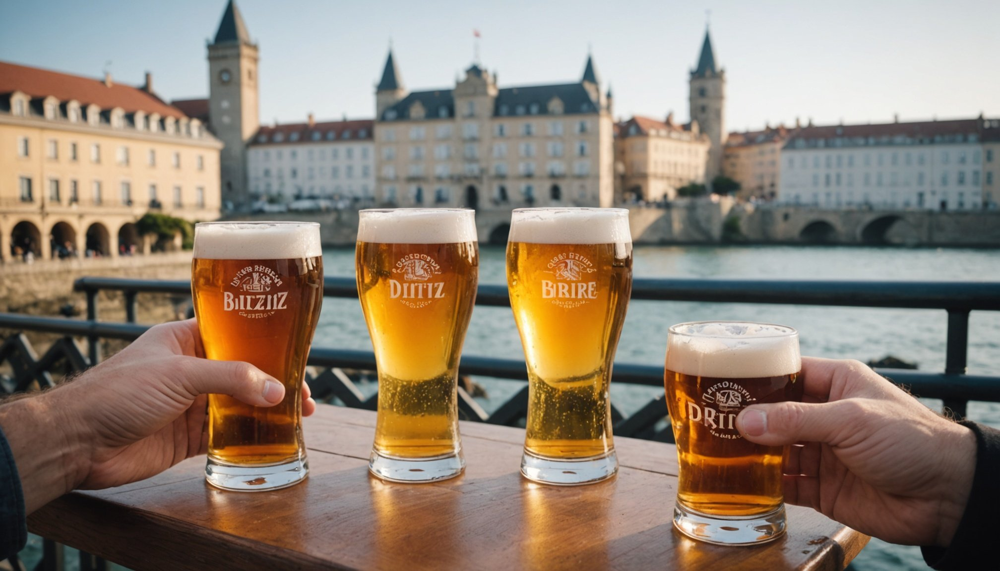
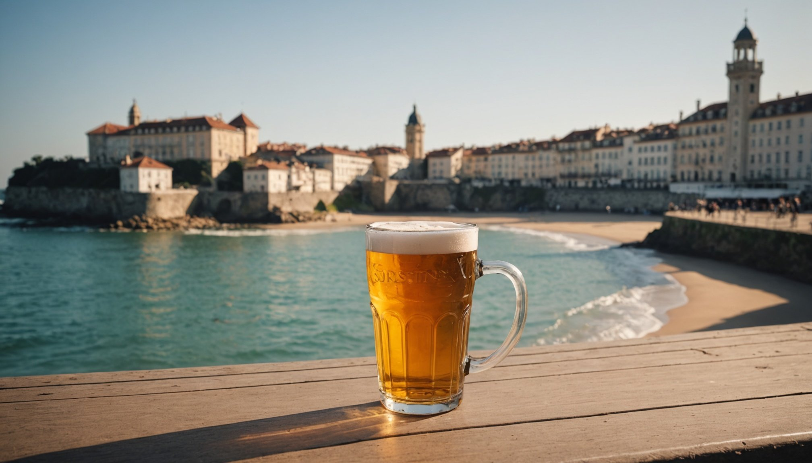

Depuis 2016, la Brasserie Artisanale de Sarlat élabore la gamme Brassée 24 avec les meilleurs malts et houblons, au coeur de la Dordogne.

Brassées à Sarlat-la-Canéda avec des malts et houblons sélectionnés pour leur qualité. Chaque bière reflète le caractère et le terroir du Périgord.
Légère et rafraîchissante, notre blonde est une bière de caractère aux notes de céréales dorées. Également disponible en version BIO.
Ronde et chaleureuse, l'ambrée dévoile des arômes de caramel et de fruits secs. Un équilibre parfait entre douceur et amertume.
Fraîche et légèrement acidulée, la blanche se distingue par ses notes d'agrumes et d'épices. Idéale pour les beaux jours en Dordogne.
Houblonnée et aromatique, la Pale Ale offre un bouquet floral et une amertume franche. Pour les amateurs de bières de caractère.
Noire et intense, la Stout révèle des saveurs de café torréfié et de chocolat noir. Complexe et onctueuse en bouche.
Puissante et complexe, la Triple allie richesse maltée et notes fruitées. Une bière de dégustation aux arômes généreux.
Spécialité du Périgord, cette bière unique est élaborée avec de la liqueur de noix locale. Un mariage subtil entre houblon et terroir.
Boissons sans alcool, certifiées biologiques. Limonade artisanale et Ginger Beer pétillante, brassées avec le même soin que nos bières.
Coffrets de 2 ou 4 bières avec verres assortis, et lots de bouteilles 75cl avec sous-bocks. Le cadeau idéal du Périgord.

La Brasserie Artisanale de Sarlat est née de la rencontre entre Xavier Gombert, ingénieur agronome passionné par le monde brassicole, et Jean-Yves Fauste, ancien champion du monde de parapente reconverti dans l'artisanat.
Ensemble, ils ont créé en 2016 la gamme Brassée 24, un clin d'oeil au département de la Dordogne. Leur ambition : brasser des bières de caractère qui reflètent le terroir du Périgord Noir.
Installés dans la zone industrielle de Madrazès à Sarlat-la-Canéda, ils sélectionnent les meilleurs malts et houblons pour élaborer une gamme variée, de la blonde légère à la stout intense, en passant par leur spécialité à la noix du Périgord.
Des bières artisanales brassées avec passion au coeur du Périgord Noir, à déguster entre amis ou en famille.


ZI de Madrazès, Rue Blaise Pascal
24200 Sarlat-la-Canéda